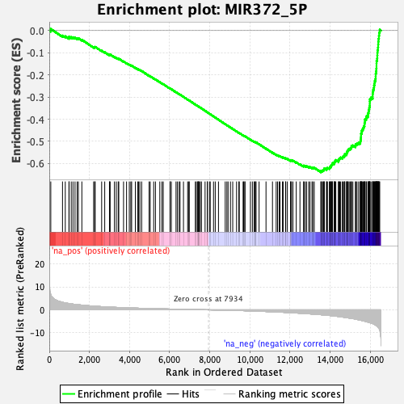
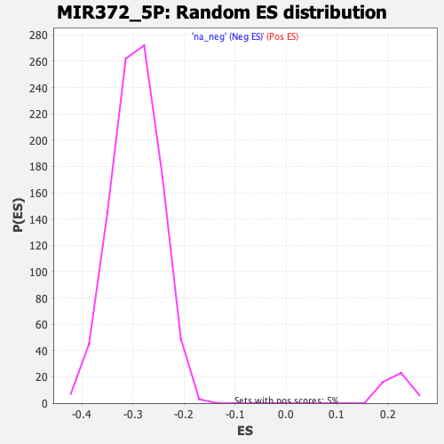

| | | Dataset | DE_genes2 |
| Phenotype | NoPhenotypeAvailable |
| Upregulated in class | na_neg |
| GeneSet | MIR372_5P |
| Enrichment Score (ES) | -0.63940674 |
| Normalized Enrichment Score (NES) | -2.1677527 |
| Nominal p-value | 0.0 |
| FDR q-value | 0.0 |
| FWER p-Value | 0.0 |
Table: GSEA Results Summary

Fig 1: Enrichment plot: MIR372_5P
Profile of the Running ES Score & Positions of GeneSet Members on the Rank Ordered List
| PROBE | GENE SYMBOL | GENE_TITLE | RANK IN GENE LIST | RANK METRIC SCORE | RUNNING ES | CORE ENRICHMENT | | 1 | TFPI2 | | | 75 | 6.662 | 0.0071 | No |
| 2 | OGDH | | | 659 | 3.289 | -0.0228 | No |
| 3 | TSPAN2 | | | 797 | 3.054 | -0.0258 | No |
| 4 | ADRB2 | | | 982 | 2.755 | -0.0322 | No |
| 5 | IVNS1ABP | | | 985 | 2.753 | -0.0275 | No |
| 6 | RNF44 | | | 1094 | 2.611 | -0.0295 | No |
| 7 | COL1A1 | | | 1181 | 2.496 | -0.0304 | No |
| 8 | CSK | | | 1283 | 2.375 | -0.0324 | No |
| 9 | SVBP | | | 1388 | 2.279 | -0.0348 | No |
| 10 | MB21D2 | | | 1450 | 2.223 | -0.0346 | No |
| 11 | HSPB8 | | | 1623 | 2.066 | -0.0415 | No |
| 12 | FAM149A | | | 2211 | 1.609 | -0.0747 | No |
| 13 | GATA6 | | | 2262 | 1.581 | -0.0749 | No |
| 14 | BAHD1 | | | 2287 | 1.570 | -0.0736 | No |
| 15 | DTX3L | | | 2610 | 1.382 | -0.0909 | No |
| 16 | RPL15 | | | 2763 | 1.304 | -0.0980 | No |
| 17 | MYO1C | | | 2999 | 1.197 | -0.1103 | No |
| 18 | BAZ2A | | | 3008 | 1.193 | -0.1086 | No |
| 19 | TNFAIP8L1 | | | 3033 | 1.180 | -0.1080 | No |
| 20 | SEMA4C | | | 3247 | 1.095 | -0.1192 | No |
| 21 | GPR37 | | | 3340 | 1.061 | -0.1229 | No |
| 22 | HLA-A | | | 3436 | 1.026 | -0.1269 | No |
| 23 | PTPMT1 | | | 3464 | 1.017 | -0.1268 | No |
| 24 | MAGI1 | | | 3701 | 0.929 | -0.1396 | No |
| 25 | RASGEF1A | | | 3851 | 0.879 | -0.1472 | No |
| 26 | PIK3C2B | | | 3988 | 0.840 | -0.1541 | No |
| 27 | SMIM14 | | | 4064 | 0.820 | -0.1572 | No |
| 28 | TRAF3IP2 | | | 4105 | 0.807 | -0.1583 | No |
| 29 | ARPC2 | | | 4290 | 0.752 | -0.1682 | No |
| 30 | CAPN2 | | | 4413 | 0.716 | -0.1744 | No |
| 31 | CHSY3 | | | 4446 | 0.709 | -0.1751 | No |
| 32 | CDH1 | | | 4513 | 0.690 | -0.1780 | No |
| 33 | SMCR8 | | | 4604 | 0.661 | -0.1823 | No |
| 34 | CCDC170 | | | 4976 | 0.576 | -0.2040 | No |
| 35 | HDAC9 | | | 5031 | 0.563 | -0.2064 | No |
| 36 | ZNF532 | | | 5203 | 0.518 | -0.2159 | No |
| 37 | CTTNBP2NL | | | 5291 | 0.494 | -0.2204 | No |
| 38 | HOOK2 | | | 5509 | 0.449 | -0.2329 | No |
| 39 | TUBB | | | 5614 | 0.424 | -0.2385 | No |
| 40 | SLC6A14 | | | 5680 | 0.409 | -0.2418 | No |
| 41 | PRDM1 | | | 6019 | 0.342 | -0.2619 | No |
| 42 | SH3BGRL2 | | | 6020 | 0.342 | -0.2613 | No |
| 43 | ITGA7 | | | 6083 | 0.329 | -0.2645 | No |
| 44 | LCMT2 | | | 6317 | 0.283 | -0.2783 | No |
| 45 | EPN2 | | | 6387 | 0.266 | -0.2821 | No |
| 46 | MPZL3 | | | 6475 | 0.250 | -0.2870 | No |
| 47 | ATXN1 | | | 6516 | 0.241 | -0.2890 | No |
| 48 | C8orf48 | | | 6688 | 0.205 | -0.2991 | No |
| 49 | AP1G1 | | | 6896 | 0.171 | -0.3115 | No |
| 50 | FAM171B | | | 6955 | 0.162 | -0.3147 | No |
| 51 | ACTR3C | | | 6976 | 0.159 | -0.3157 | No |
| 52 | ZNF736 | | | 7280 | 0.101 | -0.3341 | No |
| 53 | MGAT4A | | | 7327 | 0.093 | -0.3367 | No |
| 54 | GPRASP1 | | | 7397 | 0.081 | -0.3408 | No |
| 55 | NIM1K | | | 7412 | 0.080 | -0.3415 | No |
| 56 | ANKRD6 | | | 7427 | 0.077 | -0.3423 | No |
| 57 | TMEM167B | | | 7442 | 0.075 | -0.3430 | No |
| 58 | ZNF136 | | | 7481 | 0.069 | -0.3452 | No |
| 59 | TIAM1 | | | 7523 | 0.061 | -0.3476 | No |
| 60 | HES1 | | | 7584 | 0.052 | -0.3512 | No |
| 61 | PPP2R1B | | | 7765 | 0.022 | -0.3622 | No |
| 62 | LBX2 | | | 7873 | 0.008 | -0.3687 | No |
| 63 | C21orf91 | | | 7883 | 0.007 | -0.3693 | No |
| 64 | TPM3 | | | 7984 | -0.009 | -0.3754 | No |
| 65 | SIPA1L2 | | | 8022 | -0.015 | -0.3776 | No |
| 66 | IKZF2 | | | 8186 | -0.040 | -0.3875 | No |
| 67 | SSBP2 | | | 8272 | -0.052 | -0.3927 | No |
| 68 | ARHGAP28 | | | 8433 | -0.082 | -0.4023 | No |
| 69 | ZNF805 | | | 8769 | -0.148 | -0.4226 | No |
| 70 | SEC11C | | | 8852 | -0.161 | -0.4273 | No |
| 71 | LRBA | | | 8911 | -0.173 | -0.4306 | No |
| 72 | ZNF493 | | | 9030 | -0.200 | -0.4375 | No |
| 73 | SH3YL1 | | | 9143 | -0.224 | -0.4439 | No |
| 74 | ZFP14 | | | 9335 | -0.272 | -0.4552 | No |
| 75 | DPYD | | | 9449 | -0.303 | -0.4615 | No |
| 76 | LAMP3 | | | 9469 | -0.306 | -0.4622 | No |
| 77 | PLEKHA5 | | | 9660 | -0.357 | -0.4732 | No |
| 78 | KLF5 | | | 9685 | -0.365 | -0.4740 | No |
| 79 | HECW2 | | | 9745 | -0.384 | -0.4770 | No |
| 80 | KLHL31 | | | 9753 | -0.386 | -0.4767 | No |
| 81 | DPP10 | | | 10025 | -0.466 | -0.4925 | No |
| 82 | BRI3 | | | 10123 | -0.498 | -0.4976 | No |
| 83 | ASTN2 | | | 10210 | -0.528 | -0.5019 | No |
| 84 | TNRC6B | | | 10236 | -0.535 | -0.5025 | No |
| 85 | DUSP19 | | | 10278 | -0.547 | -0.5040 | No |
| 86 | FAM83B | | | 10305 | -0.556 | -0.5047 | No |
| 87 | WNK3 | | | 10457 | -0.605 | -0.5128 | No |
| 88 | FAM8A1 | | | 10802 | -0.728 | -0.5326 | No |
| 89 | CTNNA2 | | | 11124 | -0.850 | -0.5508 | No |
| 90 | BCL10 | | | 11309 | -0.929 | -0.5605 | No |
| 91 | RALGAPA1 | | | 11377 | -0.959 | -0.5629 | No |
| 92 | PCMTD1 | | | 11457 | -0.989 | -0.5660 | No |
| 93 | NBEAL1 | | | 11501 | -1.004 | -0.5668 | No |
| 94 | CYB5D1 | | | 11622 | -1.054 | -0.5723 | No |
| 95 | GTF3C3 | | | 11656 | -1.068 | -0.5725 | No |
| 96 | AAK1 | | | 11775 | -1.118 | -0.5777 | No |
| 97 | TM4SF20 | | | 11785 | -1.125 | -0.5763 | No |
| 98 | VAX1 | | | 11866 | -1.160 | -0.5792 | No |
| 99 | LMLN | | | 12029 | -1.235 | -0.5869 | No |
| 100 | C2orf49 | | | 12032 | -1.236 | -0.5849 | No |
| 101 | ZFY | | | 12070 | -1.257 | -0.5849 | No |
| 102 | SIKE1 | | | 12143 | -1.298 | -0.5871 | No |
| 103 | RABGEF1 | | | 12310 | -1.377 | -0.5948 | No |
| 104 | TMEM33 | | | 12494 | -1.473 | -0.6034 | No |
| 105 | SPAG9 | | | 12672 | -1.577 | -0.6115 | No |
| 106 | GPATCH2L | | | 12688 | -1.584 | -0.6096 | No |
| 107 | CCSER2 | | | 12758 | -1.621 | -0.6110 | No |
| 108 | RHPN2 | | | 12822 | -1.668 | -0.6119 | No |
| 109 | ANAPC10 | | | 12929 | -1.733 | -0.6154 | No |
| 110 | GNB5 | | | 12995 | -1.767 | -0.6162 | No |
| 111 | RAD23B | | | 13094 | -1.823 | -0.6190 | No |
| 112 | STEAP2 | | | 13135 | -1.849 | -0.6182 | No |
| 113 | SEMA3A | | | 13206 | -1.894 | -0.6192 | No |
| 114 | RBM7 | | | 13537 | -2.123 | -0.6357 | Yes |
| 115 | C3orf80 | | | 13546 | -2.128 | -0.6324 | Yes |
| 116 | FAR2 | | | 13609 | -2.170 | -0.6324 | Yes |
| 117 | CCNT2 | | | 13643 | -2.196 | -0.6305 | Yes |
| 118 | DENND1B | | | 13680 | -2.223 | -0.6288 | Yes |
| 119 | SS18 | | | 13698 | -2.241 | -0.6259 | Yes |
| 120 | CHD7 | | | 13706 | -2.247 | -0.6224 | Yes |
| 121 | DBT | | | 13817 | -2.342 | -0.6250 | Yes |
| 122 | ZNF780B | | | 13830 | -2.355 | -0.6216 | Yes |
| 123 | PTEN | | | 13864 | -2.381 | -0.6194 | Yes |
| 124 | MCUR1 | | | 13960 | -2.467 | -0.6209 | Yes |
| 125 | MTFR1 | | | 13986 | -2.486 | -0.6181 | Yes |
| 126 | LRRC19 | | | 13997 | -2.493 | -0.6143 | Yes |
| 127 | CSGALNACT2 | | | 14046 | -2.543 | -0.6128 | Yes |
| 128 | ZNF711 | | | 14050 | -2.551 | -0.6085 | Yes |
| 129 | MAPK8 | | | 14079 | -2.579 | -0.6056 | Yes |
| 130 | SUSD5 | | | 14102 | -2.598 | -0.6024 | Yes |
| 131 | PPP1CC | | | 14114 | -2.608 | -0.5985 | Yes |
| 132 | NRAS | | | 14199 | -2.692 | -0.5989 | Yes |
| 133 | DNAAF2 | | | 14201 | -2.693 | -0.5942 | Yes |
| 134 | ZNF420 | | | 14233 | -2.727 | -0.5913 | Yes |
| 135 | PIGA | | | 14250 | -2.741 | -0.5875 | Yes |
| 136 | PPTC7 | | | 14281 | -2.766 | -0.5844 | Yes |
| 137 | SRSF7 | | | 14411 | -2.888 | -0.5873 | Yes |
| 138 | DIMT1 | | | 14429 | -2.913 | -0.5832 | Yes |
| 139 | ANKRD49 | | | 14443 | -2.928 | -0.5788 | Yes |
| 140 | PAIP2 | | | 14480 | -2.970 | -0.5758 | Yes |
| 141 | MAT2B | | | 14522 | -3.009 | -0.5730 | Yes |
| 142 | NUDT15 | | | 14608 | -3.122 | -0.5727 | Yes |
| 143 | EIF2S1 | | | 14635 | -3.169 | -0.5687 | Yes |
| 144 | XRN1 | | | 14695 | -3.238 | -0.5666 | Yes |
| 145 | PLRG1 | | | 14719 | -3.266 | -0.5623 | Yes |
| 146 | CFL2 | | | 14731 | -3.278 | -0.5572 | Yes |
| 147 | PPM1A | | | 14816 | -3.381 | -0.5564 | Yes |
| 148 | SCAI | | | 14827 | -3.393 | -0.5510 | Yes |
| 149 | FBN2 | | | 14840 | -3.411 | -0.5458 | Yes |
| 150 | SAR1B | | | 14871 | -3.451 | -0.5415 | Yes |
| 151 | GSTCD | | | 14899 | -3.505 | -0.5370 | Yes |
| 152 | YAF2 | | | 14947 | -3.570 | -0.5336 | Yes |
| 153 | LCOR | | | 15009 | -3.659 | -0.5309 | Yes |
| 154 | CAAP1 | | | 15052 | -3.722 | -0.5269 | Yes |
| 155 | CCDC73 | | | 15064 | -3.739 | -0.5210 | Yes |
| 156 | SUV39H2 | | | 15132 | -3.824 | -0.5184 | Yes |
| 157 | STX17 | | | 15260 | -4.037 | -0.5191 | Yes |
| 158 | SRSF2 | | | 15276 | -4.073 | -0.5128 | Yes |
| 159 | SLC30A6 | | | 15336 | -4.177 | -0.5091 | Yes |
| 160 | SFR1 | | | 15418 | -4.342 | -0.5064 | Yes |
| 161 | ALG10B | | | 15499 | -4.475 | -0.5034 | Yes |
| 162 | SLC38A1 | | | 15509 | -4.499 | -0.4960 | Yes |
| 163 | ZNF614 | | | 15529 | -4.553 | -0.4892 | Yes |
| 164 | BBS7 | | | 15533 | -4.561 | -0.4813 | Yes |
| 165 | UBE2K | | | 15537 | -4.568 | -0.4735 | Yes |
| 166 | CAPZA2 | | | 15538 | -4.569 | -0.4654 | Yes |
| 167 | STXBP5 | | | 15570 | -4.632 | -0.4592 | Yes |
| 168 | EPB41L2 | | | 15574 | -4.641 | -0.4512 | Yes |
| 169 | PTBP3 | | | 15614 | -4.752 | -0.4452 | Yes |
| 170 | QKI | | | 15650 | -4.807 | -0.4389 | Yes |
| 171 | NOC3L | | | 15676 | -4.864 | -0.4319 | Yes |
| 172 | RPF2 | | | 15709 | -4.930 | -0.4252 | Yes |
| 173 | MTPAP | | | 15712 | -4.937 | -0.4166 | Yes |
| 174 | GNA13 | | | 15733 | -4.964 | -0.4091 | Yes |
| 175 | RBAK | | | 15735 | -4.978 | -0.4004 | Yes |
| 176 | ROCK1 | | | 15795 | -5.112 | -0.3950 | Yes |
| 177 | RIMKLB | | | 15809 | -5.155 | -0.3867 | Yes |
| 178 | PHTF2 | | | 15881 | -5.335 | -0.3817 | Yes |
| 179 | PDS5A | | | 15889 | -5.372 | -0.3726 | Yes |
| 180 | LTN1 | | | 15914 | -5.431 | -0.3645 | Yes |
| 181 | TMEM106B | | | 15932 | -5.467 | -0.3560 | Yes |
| 182 | SRSF10 | | | 15948 | -5.504 | -0.3472 | Yes |
| 183 | MOB1A | | | 15970 | -5.556 | -0.3387 | Yes |
| 184 | NAA50 | | | 15974 | -5.568 | -0.3291 | Yes |
| 185 | RRP15 | | | 15975 | -5.575 | -0.3192 | Yes |
| 186 | RB1CC1 | | | 15982 | -5.616 | -0.3097 | Yes |
| 187 | PHC3 | | | 16035 | -5.790 | -0.3027 | Yes |
| 188 | SKA3 | | | 16116 | -5.989 | -0.2971 | Yes |
| 189 | RECQL | | | 16118 | -5.999 | -0.2866 | Yes |
| 190 | NECAB1 | | | 16126 | -6.032 | -0.2764 | Yes |
| 191 | KLHL11 | | | 16144 | -6.096 | -0.2667 | Yes |
| 192 | MIER3 | | | 16176 | -6.252 | -0.2576 | Yes |
| 193 | NCAPG2 | | | 16188 | -6.289 | -0.2472 | Yes |
| 194 | SCLT1 | | | 16208 | -6.361 | -0.2372 | Yes |
| 195 | ARL13B | | | 16224 | -6.452 | -0.2267 | Yes |
| 196 | NEMF | | | 16259 | -6.597 | -0.2172 | Yes |
| 197 | CEP97 | | | 16267 | -6.661 | -0.2059 | Yes |
| 198 | PPAT | | | 16270 | -6.678 | -0.1942 | Yes |
| 199 | HAUS6 | | | 16286 | -6.800 | -0.1832 | Yes |
| 200 | RC3H1 | | | 16302 | -6.867 | -0.1720 | Yes |
| 201 | COMMD8 | | | 16308 | -6.899 | -0.1602 | Yes |
| 202 | EXOC5 | | | 16309 | -6.899 | -0.1480 | Yes |
| 203 | ATAD5 | | | 16312 | -6.915 | -0.1360 | Yes |
| 204 | GXYLT1 | | | 16343 | -7.140 | -0.1252 | Yes |
| 205 | KIF2A | | | 16349 | -7.214 | -0.1129 | Yes |
| 206 | LIN7C | | | 16354 | -7.238 | -0.1004 | Yes |
| 207 | QSER1 | | | 16360 | -7.265 | -0.0879 | Yes |
| 208 | CDCA2 | | | 16385 | -7.530 | -0.0761 | Yes |
| 209 | YTHDC2 | | | 16392 | -7.621 | -0.0630 | Yes |
| 210 | KRIT1 | | | 16398 | -7.722 | -0.0497 | Yes |
| 211 | RPS6KA6 | | | 16410 | -7.867 | -0.0366 | Yes |
| 212 | NEIL3 | | | 16430 | -8.045 | -0.0236 | Yes |
| 213 | SHCBP1 | | | 16441 | -8.157 | -0.0098 | Yes |
| 214 | LYRM7 | | | 16470 | -8.672 | 0.0037 | Yes |
Table: GSEA details [plain text format]

Fig 2: MIR372_5P: Random ES distribution
Gene set null distribution of ES for MIR372_5P